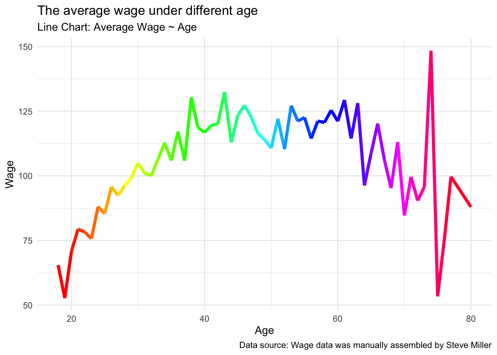
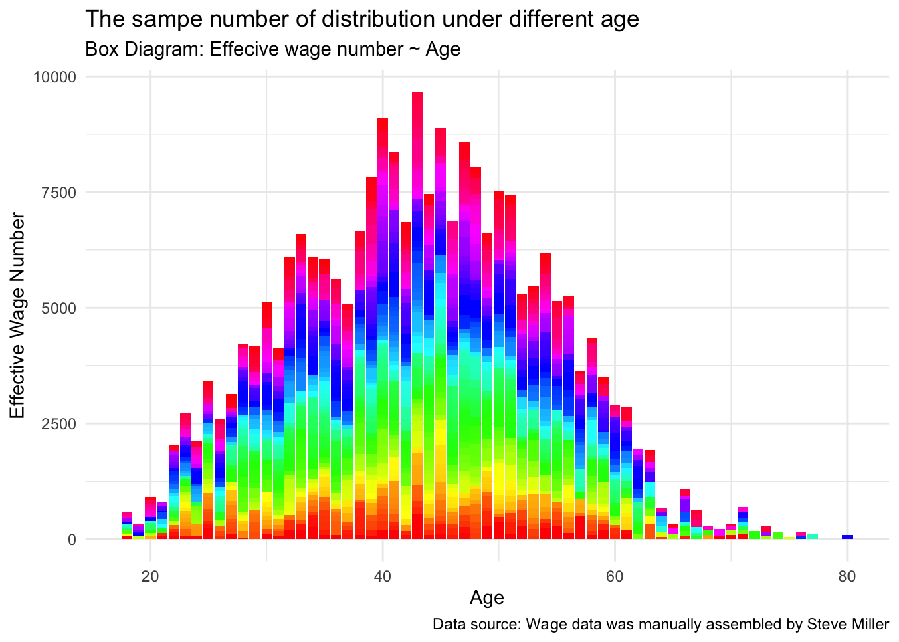
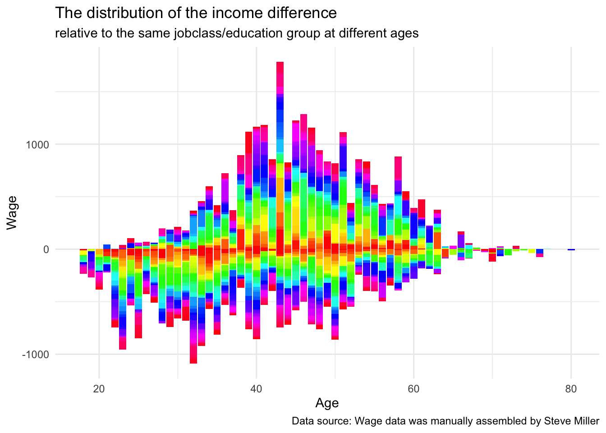
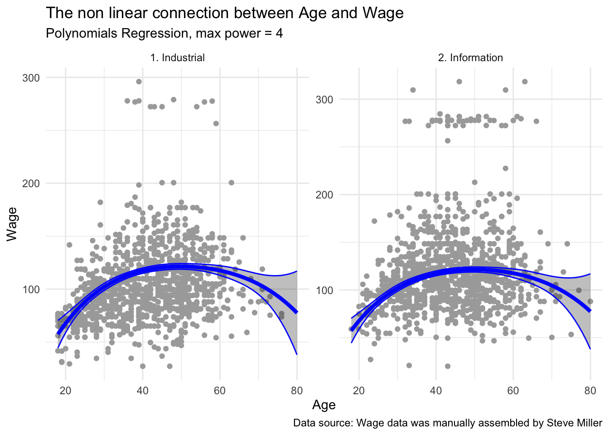
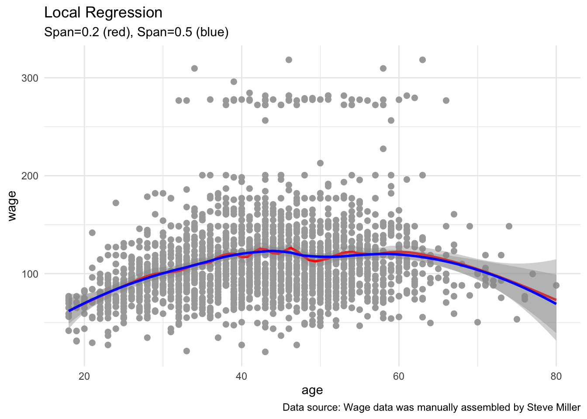
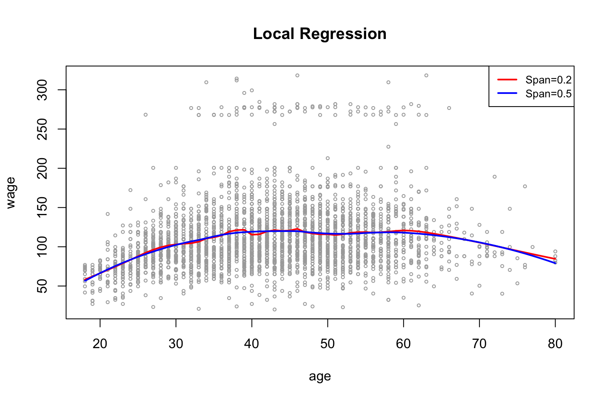

There are two commonly held beliefs around income and age (Routley 2018):
Earning trajectory is largely determined by the time a person is 35-years-old
Income is positively correlated with age
Figure: Visualize American Income Levels by Age Group (Routley 2018)
Main Problem
Is it possible that the relationship between age and income is non-linear?
Could we use some models to illustrate such a relationship?
Intended Audience
Demographers interested in the correlation between age and income
Students who are studying statistical models
Data set
Data was manually assembled by Steve Miller, of Inquidia Consulting. From the Mar. 2011 Supplement to Current Population Survey data. Wage and other data for a group of 3000 male workers in the Mid-Atlantic region.
year age wage jobclass education
1 2006 18 75.04315 1. Industrial 1. < HS Grad
2 2004 24 70.47602 2. Information 4. College Grad
3 2005 50 75.04315 2. Information 2. HS Grad
4 2008 54 127.11574 2. Information 4. College Grad
5 2008 30 111.72085 2. Information 3. Some College
6 2006 41 118.88436 2. Information 3. Some College
Under the stratification of education and jobclass, the average and variance of wage.
`summarise()` has grouped output by 'education'. You can override using the
`.groups` argument.
data.frame(Wage_a)
education jobclass Mean std
1 1. < HS Grad 1. Industrial 84.35155 20.82463
2 1. < HS Grad 2. Information 88.41956 22.40590
3 2. HS Grad 1. Industrial 94.66466 27.09078
4 2. HS Grad 2. Information 97.35285 26.74702
5 3. Some College 1. Industrial 107.54217 27.81670
6 3. Some College 2. Information 109.28264 31.99970
7 4. College Grad 1. Industrial 119.60496 39.35971
8 4. College Grad 2. Information 126.83595 41.89774
9 5. Advanced Degree 1. Industrial 143.14045 51.24746
10 5. Advanced Degree 2. Information 157.44423 56.86051
People with higher levels of education and working in the information field generally have higher incomes, but they fluctuate more
Wage %>%group_by(age) %>%summarise(Mean =mean(wage),std =sd(wage)) %>%ggplot(aes(x = age, y = Mean)) +geom_line(aes(x = age, y = Mean), linetype ="solid", color =rainbow(61), size =1.5) +labs(title ="The average wage under different age",subtitle ='Line Chart: Average Wage ~ Age',caption ="Data source: Wage data was manually assembled by Steve Miller",x ="Age", y ="Wage") +theme_minimal()

Wage rises gradually between the ages of 20 and 40, gradually stabilizes after the age of 40, and gradually declines after the age of 60. There is a clear rise around age 75, probably because the data sample is smaller. On the whole, age and wage do not show a linear increase relationship, but a non-linear increase.
Wage %>%ggplot(aes(x = age, y = wage)) +geom_bar(stat ="identity", fill =rainbow(2098)) +labs(title ="The sampe number of distribution under different age",subtitle ='Box Diagram: Effecive wage number ~ Age',caption ="Data source: Wage data was manually assembled by Steve Miller",x ="Age", y ="Effective Wage Number") +theme_minimal()

The effective wage number under different age shows really distinctive number. The number between people aged 23 and 63 is relatively stable and sufficient. Thus, it should be payed more attention in this number distribution, which might influence association results between exposure and outcome variables.
Wage %>%group_by(jobclass, education) %>%mutate(Mean_diff = wage -mean(wage),std =sd(wage)) %>%ggplot(aes(x = age, y = Mean_diff)) +geom_bar(stat ="identity", fill =rainbow(2098)) +labs(title ="The distribution of the income difference",subtitle ='relative to the same jobclass/education group at different ages',caption ="Data source: Wage data was manually assembled by Steve Miller",x ="Age", y ="Wage") +theme_minimal()

When stratified by jobclass and education level, it can be noted that the distribution trend is not the same for different ages. At the same time, the distribution characteristics of wage difference and individual wage also change significantly after group calculation, which provides ideas for subsequent variable adjustment and subgroup analysis.
fit <-lm(wage~poly(age,4),data=Wage)temp =summary(fit)data.frame(temp$coefficients)
It can be observed in the polynomial model that the significance of the quadratic age provides the basis for the nonlinear correlation.
agelims <-range(Wage$age)age.grid <-seq(from=agelims[1], to=agelims[2])newdata <-list(age=age.grid)preds <-predict(fit, newdata, se=TRUE)se.bands <-cbind(preds$fit+2*preds$se, preds$fit-2*preds$se)data_plot =data.frame(newdata, preds$fit, se.bands); colnames(data_plot)=c('Age','fit','Upper','Lower')ggplot(data = data_plot, aes(x = Age, y = fit)) +geom_point(data = Wage, aes(x = age, y = wage), color ="darkgrey") +geom_ribbon(data = data_plot, aes(x = Age, ymin = Lower, ymax = Upper), color ="blue", alpha =0.3) +geom_line(data = data_plot, aes(x = Age, y = fit), linetype ="solid", color ="blue", size =1.5) +facet_wrap(~jobclass, ncol =NULL, scales ="free_y") +labs(title ="The non linear connection between Age and Wage",subtitle ='Polynomials Regression, max power = 4',caption ="Data source: Wage data was manually assembled by Steve Miller",x ="Age", y ="Wage") +theme_minimal()

The correlation between Wage and age is basically the same in different jobclasses, which is the same as previously discussed. Interestingly, the highest peaks are reached in middle age, covering the ages of 35-65.
We use the anova() function, which performs an analysis of variance (ANOVA, using an F-test) in order to test the null hypothesis that a model M1 is sufficient to explain the data against the alternative hypothesis that a more complex model M2 is required.
Analysis of Variance Table
Model 1: wage ~ age
Model 2: wage ~ poly(age, 2)
Model 3: wage ~ poly(age, 3)
Model 4: wage ~ poly(age, 4)
Model 5: wage ~ poly(age, 5)
Res.Df RSS Df Sum of Sq F Pr(>F)
1 2096 3440989
2 2095 3284147 1 156842 100.1179 <2e-16 ***
3 2094 3280863 1 3284 2.0964 0.1478
4 2093 3279727 1 1136 0.7251 0.3946
5 2092 3277272 1 2455 1.5671 0.2108
---
Signif. codes: 0 '***' 0.001 '**' 0.01 '*' 0.05 '.' 0.1 ' ' 1
ANOVA results show that only the square of Age can increase the explanatory power of Wage in the model, and there is no higher-order relationship between them.
Polynomial logistic regression
Now we fit a logistic regression model to a binary response variable, constructed from wage. We code the big earners (>250K) as 1, else 0.
fit <-glm(I(wage>250) ~poly(age,3), data=Wage, family=binomial)summary(fit)
Call:
glm(formula = I(wage > 250) ~ poly(age, 3), family = binomial,
data = Wage)
Deviance Residuals:
Min 1Q Median 3Q Max
-0.3184 -0.2872 -0.2484 -0.1440 3.1003
Coefficients:
Estimate Std. Error z value Pr(>|z|)
(Intercept) -4.0998 0.2712 -15.116 < 2e-16 ***
poly(age, 3)1 52.2096 17.0657 3.059 0.00222 **
poly(age, 3)2 -40.6636 14.8921 -2.731 0.00632 **
poly(age, 3)3 15.4169 10.5255 1.465 0.14300
---
Signif. codes: 0 '***' 0.001 '**' 0.01 '*' 0.05 '.' 0.1 ' ' 1
(Dispersion parameter for binomial family taken to be 1)
Null deviance: 516.31 on 2097 degrees of freedom
Residual deviance: 490.97 on 2094 degrees of freedom
AIC: 498.97
Number of Fisher Scoring iterations: 8
Here I() is a wrapper function; A wrapper function is a function in a software library or a computer program whose main purpose is to call a second subroutine or a system call with little or no additional computation “Wrapper Function” (2023).
The computations are on the logit scale. To transform, we need to apply the inverse logit mapping \[p=\frac{e^\eta}{1+e^\eta}.\]
In order to perform local regression, we use the loess() function.
ggplot(data = Wage, aes(x = age, y = wage)) +geom_point(color ="darkgrey", size =2) +geom_smooth(method ="loess", formula = y ~ x, span =0.2, color ="red", size =1) +geom_smooth(method ="loess", formula = y ~ x, span =0.5, color ="blue", size =1) +xlim(agelims) +labs(title ="Local Regression", subtitle ='Span=0.2 (red), Span=0.5 (blue)',caption ="Data source: Wage data was manually assembled by Steve Miller") +theme_minimal() +theme(legend.position ="topright") +scale_color_manual(values =c("red", "blue")) +guides(color =guide_legend(title =NULL))

Local regression describes the nonlinear joint with a higher degree of freedom model(Cleveland and Loader 1996), and the results are in good agreement with the multi-variable model.
Additional information for this analysis
This study focuses on the correlation between Wage and Age, but does not discuss the stratification and adjustment of variables. Meanwhile, the predicted value of the model comes from the training sample of the model, which will interfere with the actual fitting effect. More rigorous additional analysis is needed.
To compare the figure between plot function in base package and ggplot function, I show you the figure without using ggplot. 
Summary of Analysis
People with higher levels of education and working in the information field generally have higher incomes, but they fluctuate more
When stratified by jobclass and education level, it can be noted that the distribution trend is not the same for different ages. At the same time, the distribution characteristics of wage difference and individual wage also change significantly after group calculation, which provides ideas for subsequent variable adjustment and subgroup analysis.
ANOVA results show that only the square of Age can increase the explanatory power of Wage in the model, and there is no higher-order relationship between them.
Local regression describes the nonlinear joint with a higher degree of freedom model, and the results are in good agreement with the multi-variable model.
Cleveland, William S., and Clive Loader. 1996. “Smoothing by Local Regression: Principles and Methods.” In Statistical Theory and Computational Aspects of Smoothing, edited by Wolfgang Härdle and Michael G. Schimek, 10–49. Contributions to Statistics. Heidelberg: Physica-Verlag HD. https://doi.org/10.1007/978-3-642-48425-4_2.
Jedermann, Reiner, and Walter Lang. 2022. “Wrapper Functions for Integrating Mathematical Models into Digital Twin Event Processing.”Sensors 22 (20): 7964. https://doi.org/10.3390/s22207964.